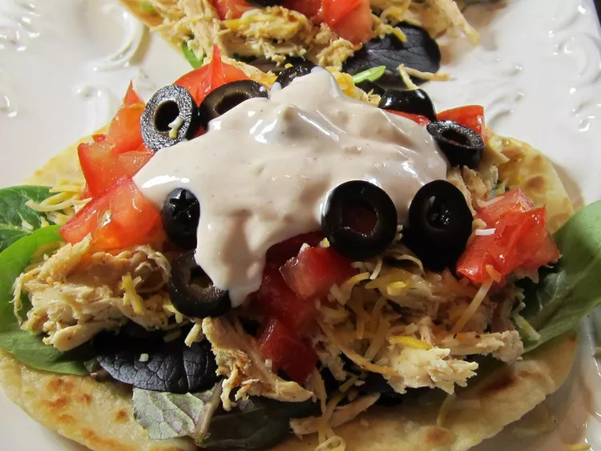

Ranch Chicken Tacos
| Prep Time | Cook Time | Total Time | Servings | Yield |
|---|---|---|---|---|
| 20 mins | 5 mins | 25 mins | 4 | 8 tacos | Jump to Nutrition Facts |
These ranch chicken tacos are a great change from regular Mexican-style tacos. A quick, cool summer dinner made with leftover rotisserie chicken. Naturally, you can use any type of chicken cooked the way you like; just be sure to shred it for real tacos.